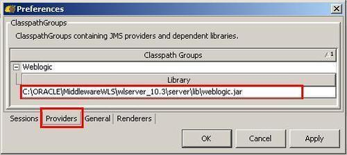
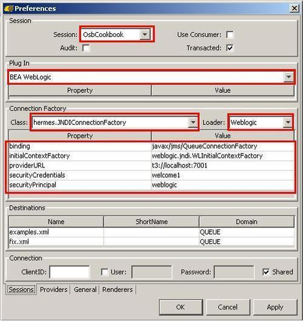
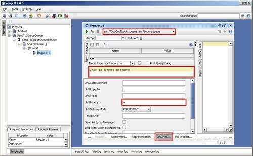
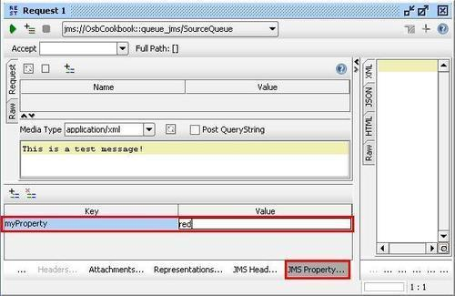
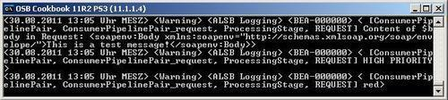
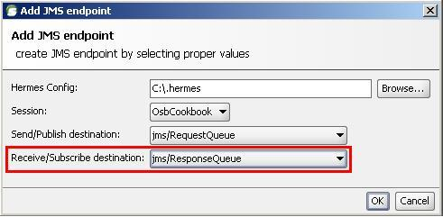

We have already seen soapUI being used for Web Services testing. In this recipe, we will demonstrate how soapUI can also be used for testing JMS-based interfaces.
We will use the solution from the recipe Accessing JMS Transport message headers and properties in message flow, which implemented a proxy service consuming from the SourceQueue of the OSB Cookbook standard environment. In that recipe, we have used the WebLogic console and replace it now in this recipe by soapUI.
The advantage of using soapUI for testing is the persistence of the different test cases and by that the possibility to automate tests. This is not achievable through the console, and also QBrowser shown in the previous recipe cannot be used for automating tests.
Download and install the latest version of soapUI (soapUI 4.0 at the time of writing) from here: http://www.soapui.org. Make sure that you also select and install HermesJMS when asked by the soapUI installer.
Import the finished solution from the previous recipe into Eclipse from \chapter-3\solution\accessing-jms-transport-headers-in-message-flow.
Before we can use soapUI for testing JMS, we need to configure JMS. This is done in HermesJMS, another external tool for working with JMS, which is used behind the scenes by soapUI. Perform the following steps to configure HermesJMS:
<HERMES_HOME>\bin\hermes.bat and add the following JAVA_HOME and PATH variable right at the beginning:SET JAVA_HOME=[FMW_HOME]\jrockit_160_22_D1.1.1-3 SET PATH=%JAVA_HOME%\bin
Weblogic into the Classpath group name field and click OK.<WEBLOGIC_HOME>\server\lib\weblogic.jar and click Open.
OsbCookbook into the Session field.|
Property |
Value |
|---|---|
|
|
|
|
|
|
|
|
|
|
|
|
|
|
|

HermesJMS is now ready and can be used to administer the JMS server. The configuration is stored in the .hermes/hermes-config.xml file.
Now we can go back to soapUI and use the HermesJMS configuration to send a message to a queue through a soapUI request. In soapUI perform the following steps:
SendToSourceQueue into the Project Name field and enable the Add REST Service option and click OK. SendToSourceQueueService into the Service Name, enable the Create Resource option and click OK. SourceQueue into the Resource Name field and click OK.We have added a RESTful interface with one method SendMessage. To be able to use JMS, we have to add a JMS endpoint:
hermes-config.xml created previously can be found (c:\.hermes on my machine).Now the interface to the queue is defined in soapUI and we can finally execute a test and send a message to the SourceQueue. In soapUI, perform the following steps:

myProperty into the Specify name of JMS Property to add field of the pop-up window. Click OK. red into the Value cell for the value of myProperty.

A high priority message has been consumed because we have set the JMSPriority to a value greater than 6 and the myProperty had the value red in the proxy service (remember the behavior of the previous recipe). This shows that the soapUI test was successful.
SoapUI supports SOAP-based as well as RESTful requests. Because we don't want to send a SOAP message to our queue, we have used the REST features and configured a RESTful request. By adding a JMS endpoint we made sure that the request is not sent through HTTP, which is the default protocol soapUI uses, but through JMS. Adding a JMS endpoint is only possible if the JMS server has been previously setup in HermesJMS. SoapUI uses the HermesJMS configuration to communicate with the JMS server. In this recipe, we have configured HermesJMS to work with WebLogic JMS, but any other JMS-compliant server would work as well.
SoapUI can also be used to do request/reply messaging through JMS, where the request queue and response queue are different. Just specify the second queue in the Receive/Subscribe destination.

SoapUI can also be used to test SOAP over JMS. The usage of SOAP over JMS will be shown in Chapter 10, Sending SOAP over JMS.